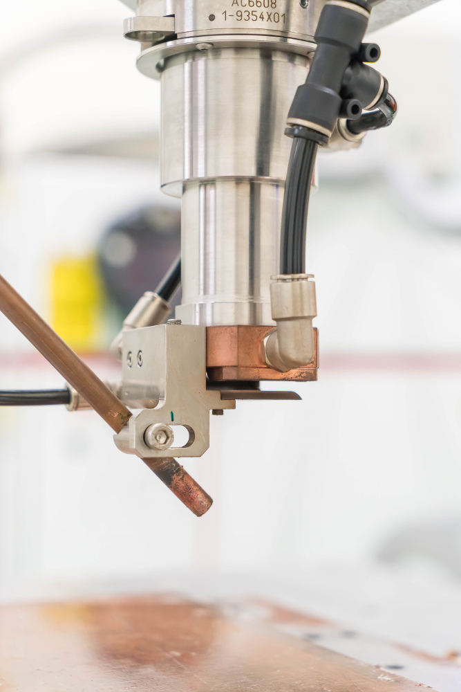

Automoción
Piezas de precisión para motores, transmisiones y componentes del sector del automóvil con tolerancias exigentes.
Torneado y fresado CNC en Catarroja (Valencia) para los sectores más exigentes de la industria.

Torno CNC CMZ de doble cabezal sincronizado, diseñado para realizar mecanizados completos en una sola sujeción. Su sistema bimandril permite trabajar ambas caras de la pieza sin intervención manual, reduciendo tiempos de ciclo y aumentando la productividad.
Torno CNC CMZ de un cabezal, perfecto para mecanizados de precisión y producción flexible. Su construcción sólida, junto con un sistema de control de última generación, permite mantener tolerancias muy ajustadas y obtener un acabado impecable.

Diseñada para ofrecer cortes limpios y acabados excepcionales incluso en los materiales más exigentes. Su estructura robusta y el control digital avanzado garantizan estabilidad, velocidad y fiabilidad en cada operación.
Ideal para mecanizados de precisión en acero, aluminio y materiales técnicos.
Nuestros servicios están diseñados para adaptarse a los requisitos específicos de cada industria.
Piezas de precisión para motores, transmisiones y componentes del sector del automóvil con tolerancias exigentes.
Componentes que cumplen con los estándares más rigurosos del sector aeroespacial y de defensa.
Piezas para equipamiento e instrumental médico con acabados impecables y materiales certificados.
Componentes para maquinaria industrial, automatización y líneas de producción.
Piezas para instalaciones eólicas, solares y otros sistemas de generación de energía limpia.
Componentes mecanizados para el sector ferroviario con los más altos estándares de seguridad.


Cuéntanos tu proyecto y te daremos presupuesto adaptado a tus necesidades, plazos y volumen.